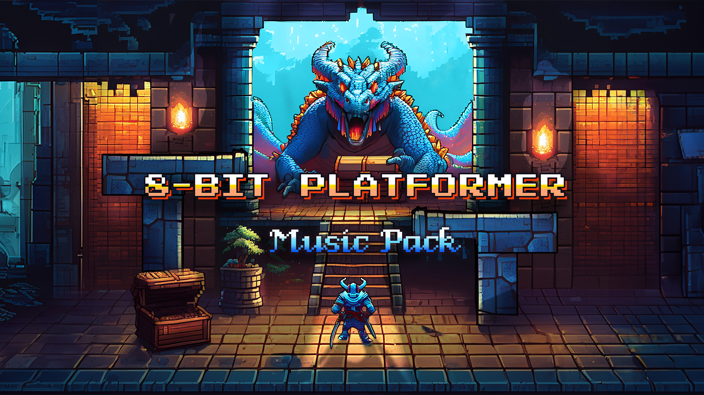

MUSIC PACK OF HIGH-QUALITY TRACKS, 100% CLEARED FOR USAGE ON YOUTUBE. CRAFTED WITH LOVE IN AN ANTHENTIC 8-BIT RETRO AESTHETIC, WITH VERTICAL SLICES IN MIND.
This mini music pack contains 6 tracks (+ 6 loopable versions + 1 stinger) of music in an authentic 8-bit style. These tracks are your perfect toolkit for a vertical slice: 3 tracks for exploration & suspense levels, 1 for a boss battle, and 2 for menu, cutscene or dialogue. These tracks are a mix of melancholic, suspenseful and energetic, making them perfect for platformers, text adventures, RPG adventures, battles, but also retro sci-fi, space adventure, roguelite, farming/management, and more.
SOUNDS LIKE:
TRACKLIST (.wav, 48kHz, 16bit):
1. Hello World! [1:33]
2. Crawling Menace [1:29]
3. Peril Is Nigh [1:34]
4. Let's Fight! (Battle/Boss) [1:31]
5. Once Upon A Time 1 [1:04]
6. Once Upon A Time 2 [1:05]
7. [LOOP] Hello World! [1:29]
8. [LOOP] Crawling Menace [1:26]
9. [LOOP] Peril Is Nigh [1:32]
10. [LOOP] Let's Fight! (Battle/Boss) [1:28]
11. [LOOP] Once Upon A Time 1 [1:00]
12. [LOOP] Once Upon A Time 2 [1:00]
13. [STINGER] Battle Starts [0:01]
👋 I'M HERE TO HELP 👋
• All tracks in this pack are fully cleared for YouTube and streaming, so you won’t face any legal or licensing issues. If by any chance a problem does arise, I’ll personally resolve it for you (corentin.guezenoc.pro@gmail.com).
• After downloading, feel free to contact me directly (corentin.guezenoc.pro@gmail.com) for additional services such as track modifications, consulting to find the best fit for your game, implementation assistance, gameplay testing, or custom music creation — for an additional fee.
• I am always thrilled to know that someone used my tracks in their game. Please do reach out (corentin.guezenoc.pro@gmail.com) or tag me on social media (www.instagram.com/corentinguezenoc). I'd like to hear all about your experience!
DETAILS:
"Hello World!", "Crawling Menace" and "Peril Is Nigh" are intended for gameplay situations. They are variants of each other, providing increasing drive and tension from one track to the other.
"Let's Fight!" is intended as a battle/boss theme.
"Once Upon A Time 1" and "Once Upon A Time 2" are quite atmospheric and are particularly suited for cutscenes and dialogues. They are variants of each other.